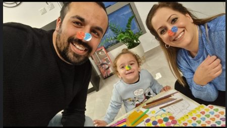
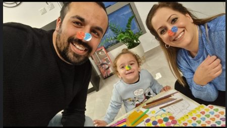
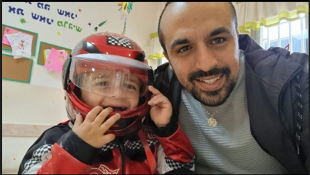
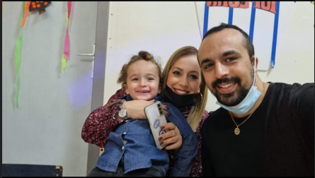
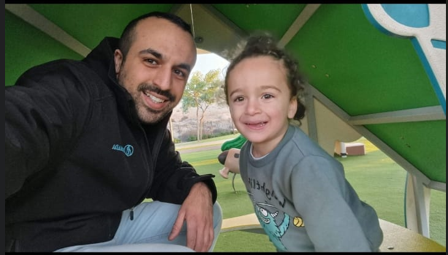
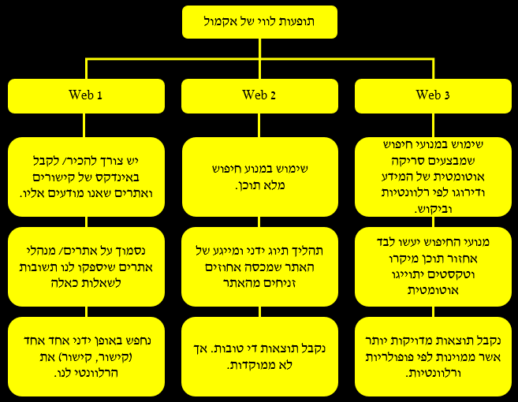

About Me
היי אני אוראל מבנולקר
בן 28, נשוי לספיר ואבא לאופיר בנימין
הנדסאי אלקטרוניקה ומחשבים וסטודנט למערכות מידע
- וזהו האתר הראשון שלי -
אני מאוד אוהב ליצור דברים מקוד שכתבתי דבר שבא לידי ביטוי מאוד בקורס זה
מצפה מעצמי להגיע לרמה גבוהה של פיתוח אתרים ואף לעסוק בזה בעתיד
הקושי העיקרי בו נתקלתי בעבודה היה חילוק האתר לגורמים ועיצובם
My Photos
 




My Playlist
Give me a like
Scan my code
Ans
The difference between the Webs:
| Web 1 | Web 2 | Web 3 |
|---|---|---|
| נחשב כיעד אינטרנטי לקריאה בלבד על יצירתיות תוכן של המפיק | מתמקד ביצירתיות תוכן של משתמשים ומפיקים | מתמקד על מערכי נתונים מקושרים |
| לחבר מידע הכל היה תוכן סטטי, בכיוון אחד פרסום תוכן בלי שום דבר אמיתי כמו אינטרקציה |
לחבר אנשים יותר די-כיווני, תקשורת דרך חברתית, רשתות, בלוגים, תיוג. תוכן שנוצר על ידי משתמשים ווידאו |
לחבר ידע הבינה מלאכותית והאינטרנט לומדים מה אתה רוצה ומספק לך את חווית המשתמש מותאמת |
| מנועי חיפוש לאחזור תוכן מאקרו חיפוש מהיר אך לרוב התוצאות לא מדויקות משתמשים יכולים "לבלות" זמן רב בחיפוש אחר מבוקשם |
מנועי חיפוש מאחזרים תגיות עם תוכן מיקרו ואפילו מאחזר תגיות עם תוכן מאקרו. תהליך תיוג ידני ומייגע שמכבה אחוזים זניחים מהאתר. |
מנועי החיפוש יעשו לבד אחזור תוכן מיקרו וטקסטים יתוייגו אוטומטית. תרגום אוטומטי של תוכן מאקרו למיקרו תוכן. חיפוש מדוייק, ניתן לצרף מילים הומוגניות ומילים נרדפות לתהליך החיפוש |
אז נתחיל בשאלה מה יהיו ההבדלים בחיפוש השאילתה "תופעולת לוואי של תרופות" בין
Web-3 -ל Web-1
רק מנהלי האתר יכלו לעלות תוכן Web 1-ב
ונאלצנו לסמוך עליהם על מנת לקבל תשובה. למעשה נאלצנו לבצע
חיפוש ידני באתרים אלה עד למציאת תשובה מספקת
לעומת זאת, מנועי החיפוש יעשו עבורנו את העבודה Web 3-ב
התוכן שנקבל יהיה ממוין, פופולרי ונקבל תוצאה מדוייקת יותר.
